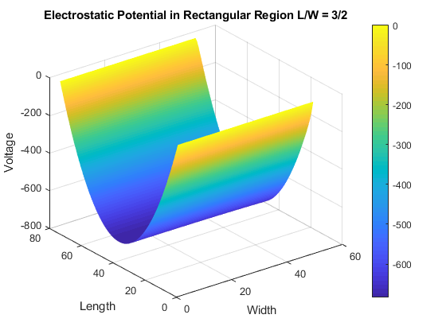
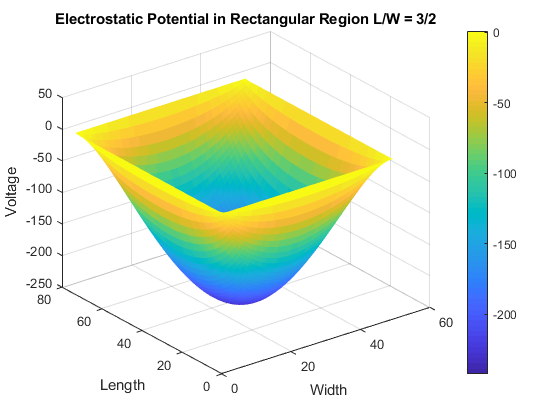

Contents
%%%%%%%%%%%% Harmonic Wave Equation in 2D FD and Modes %%%%%%%%%%%% % By David, Patrobas, Andrew and Xiaochen % Febuary 24th, 2019 % Assignment 2 % Patrobas Adewumi global C; C.q_0 = 1.60217653e-19; % electron charge C.hb = 1.054571596e-34; % Dirac constant C.h = C.hb * 2 * pi; % Planck constant C.m_0 = 9.10938215e-31; % electron mass C.kb = 1.3806504e-23; % Boltzmann constant C.eps_0 = 8.854187817e-12; % vacuum permittivity C.mu_0 = 1.2566370614e-6; % vacuum permeability C.c = 299792458; % speed of light nx = 75; L = nx;% length ny = 50; W = ny; % width dx = 1; dy = 1; G = sparse(nx*ny, ny*nx); V = ones(nx*ny,1); alpha = (C.hb^2) / (2 * C.m_0); map = @(i,j) j + (i - 1)*ny; %%%%%%%%%%%%%%%%%%%%%%% Part a %%%%%%%%%%%%%%%%%%%%%%%%%%%%%%%%% % Set boundary conditions for i=1:nx for j=1:ny n = map(i,j); nxm = map(i-1,j); nxp = map(i+1,j); nym = map(i,j-1); nyp = map(i,j+1); % when Length = 0 (V = Vo) if i == 1 G(n,:) = 0; G(n,n) = 1; V(n) = 1; % When lenght is some given length, L (V = 0) elseif i == nx G(n,:) = 0; G(n,n) = 1; V(n) = 0; elseif (j == 1 || j == ny) G(n,:) = 0; G(n,n) = -3; G(n,nxm) = 1; G(n,nxp) = 1; G(n,nyp) = 1; else G(n,:) = 0; G(n,n) = -4; G(n,nxm) = 1; G(n,nxp) = 1; G(n,nym) = 1; G(n,nyp) = 1; end end end % GV = F Solve for F F = G\V; surfs_up = zeros(nx,ny); for i = 1:nx for j = 1:ny n = map(i,j); surfs_up(i,j) = F(n); end end figure(1) surf(surfs_up) % I am a simple man and so is the colormap colormap default shading interp colorbar title('Electrostatic Potential in Rectangular Region L/W = 3/2') xlabel('Width') ylabel('Length') zlabel('Voltage') %%%%%%%%%%%%%%%%%%%%%%% Part b %%%%%%%%%%%%%%%%%%%%%%%%%%%%%%%%% % Set boundary conditions for i=1:nx for j=1:ny n = map(i,j); nxm = map(i-1,j); nxp = map(i+1,j); nym = map(i,j-1); nyp = map(i,j+1); if i == 1 G(n,:) = 0; G(n,n) = 1; V(n) = 1; elseif i == nx G(n,:) = 0; G(n,n) = 1; V(n) = 1; elseif j == 1 G(n,:) = 0; G(n,n) = 1; V(n) = 0; elseif j == ny G(n,:) = 0; G(n,n) = 1; V(n) = 0; else G(n,:) = 0; G(n,n) = -4; G(n,nxm) = 1; G(n,nxp) = 1; G(n,nym) = 1; G(n,nyp) = 1; end end end % GV = F Solve for F F = G\V; % Set up a surf plot surfs_up = ones(nx,ny); for i = 1:nx for j = 1:ny n = map(i,j); surfs_up(i,j) = F(n); end end figure(2) surf(surfs_up) % I am a simple man and so is the colormap colormap default shading flat colorbar title('Electrostatic Potential in Rectangular Region L/W = 3/2') xlabel('Width') ylabel('Length') zlabel('Voltage') 
Publish this report
Meshing becomes an accurate tool when the amount of points used becomes near infinite Analytical solutions can be obtained exactly with pencil and paper; Numerical solutions cannot be obtained exactly in finite time and typically cannot be solved using pencil and paper.
% These distinctions, however, can vary. There are increasingly many theorems % and equations that can only be solved using a computer; however, the computer % doesn't do any approximations, it simply can do more steps than any human can ever hope to do without error. % In numerical computing, we specify a problem, and then crunch numbers in a very well-defined, carefully-constructed order. % If we are very careful about the way in which the numbers are crunched, % we can guarantee that the result is only slightly inaccurate, and usually close enough for its intended purpose. % Numerical solutions very rarely can contribute to proofs of new ideas. % Analytic solutions are generally considered to be "stronger". % The thinking goes that if we can get an analytic solution, it is exact, % and then if we need a number at the end of the day, we can just plug numbers into the analytic solution. % However, even if analytic solutions can be found, they might not be able to be computed quickly. % As a result, numerical approximation will never go away, and both approaches contribute holistically to the fields of mathematics and quantitative sciences.